GUI3 – UI Mockups & Ablauf-Diagramme¶
Mockups für alle Screens, Sub-Tabs und Komponenten Begleitdokument zu
analysis.mdundplan.mdPNG-Mockups generiert mit
generate_mockups.py(matplotlib) – siehemockups/Verzeichnis. Jeder Mockup existiert in Light (01_global_layout.png) und Dark (01_global_layout_dark.png) Variante.
Inhaltsverzeichnis¶
- Global Layout
- Tab 1: Processing – Input & Scan
- Tab 1: Processing – Parameter + Assumptions
- Tab 1: Processing – AI Empfehlung
- Tab 1: Processing – Run Monitor
- Tab 2: Tools – Raw Stack
- Tab 2: Tools – Astrometry
- Tab 2: Tools – PCC
- Tab 3: History – Run History
- Logging-Konzept
- Toast-Notifications
- Responsive Verhalten
1. Global Layout¶
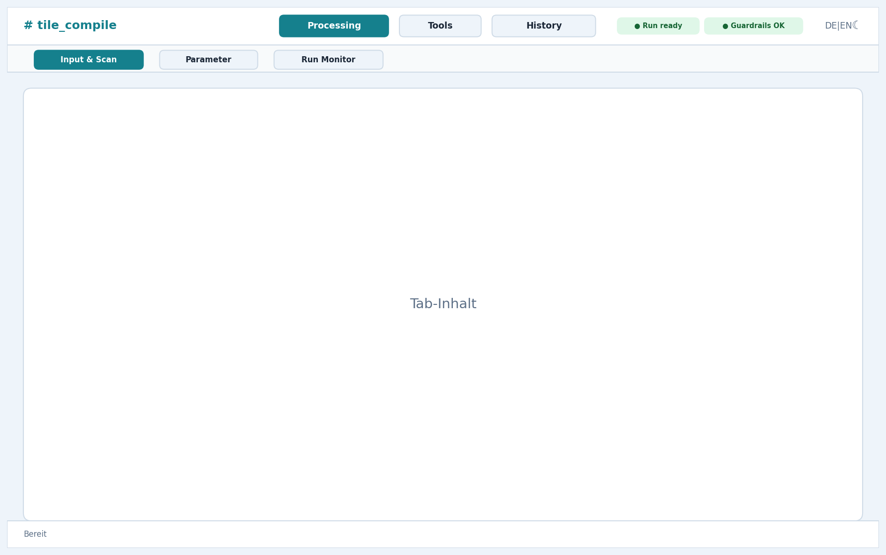
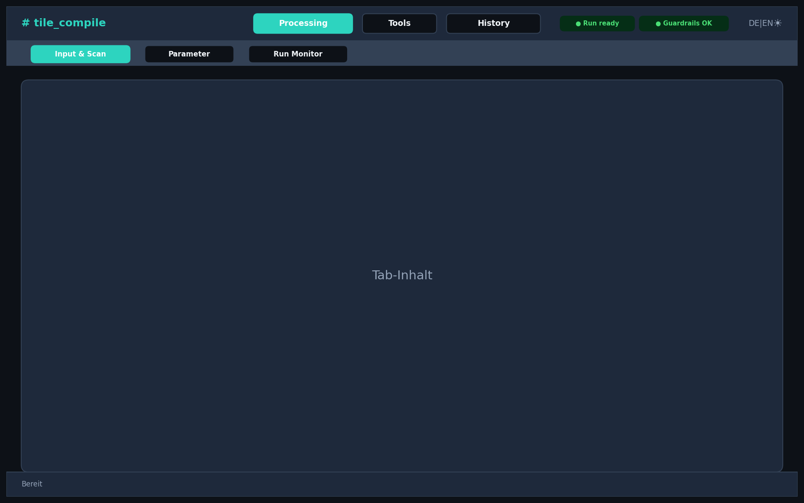
1.1 Hauptansicht¶
┌─────────────────────────────────────────────────────────────────────┐
│ # tile_compile [ Processing ] [ Tools ] [ History ] [DE|EN] [S]│
│ ● Run ready ● Guardrails: OK │
├─────────────────────────────────────────────────────────────────────┤
│ │
│ Sub-Tabs (kontextabhängig): │
│ [ Input & Scan ] [ Parameter ] [ Run Monitor ] │
│ │
│ ┌─────────────────────────────────────────────────────────────┐ │
│ │ │ │
│ │ Tab-Inhalt │ │
│ │ │ │
│ └─────────────────────────────────────────────────────────────┘ │
│ │
└─────────────────────────────────────────────────────────────────────┘
1.2 Header-Detail¶
┌─────────────────────────────────────────────────────────────────────┐
│ ⬡ tile_compile [DE|EN] [☾/☀] │
│ ┌─────────────┐ ┌──────────────┐ │
│ │ ● Run ready │ │ ● Guardrails │ │
│ └─────────────┘ └──────────────┘ │
└─────────────────────────────────────────────────────────────────────┘
- Status-Chips: Live aktualisiert (grün=OK, gelb=check, rot=error, blau=running)
- ☾/☀ Theme-Toggle: Wechselt zwischen Light/Dark (persistiert in
uiStore) - DE|EN: Sprachumschalter (persistiert)
1.3 Sub-Tab-Leiste mit Guardrail-Indikatoren¶
| Icon | Bedeutung |
|---|---|
| ● (blau) | Aktiv / Scan läuft |
| ✅ (grün) | Validiert / OK |
| ⚠️ (gelb) | Warnung / nicht validiert |
| ❌ (rot) | Fehler / Blockiert |
| ⏸ (grau) | Kein Run aktiv |
2. Tab 1: Processing – Input & Scan¶
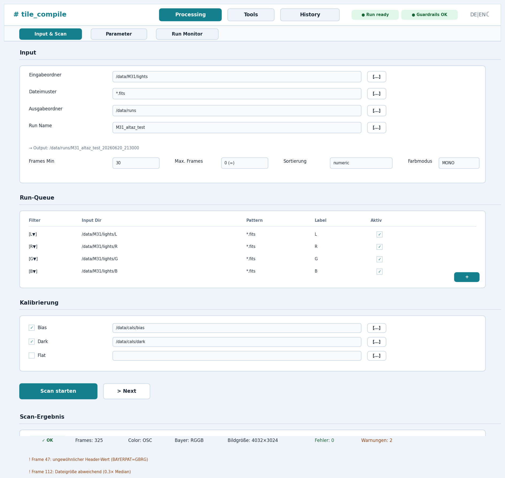
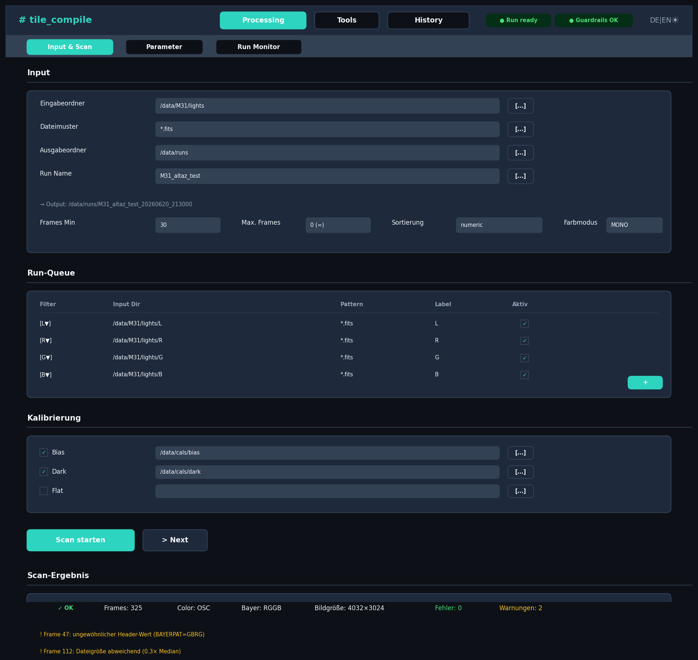
2.1 Layout¶
┌─────────────────────────────────────────────────────────────────────┐
│ Input & Scan │
├─────────────────────────────────────────────────────────────────────┤
│ │
│ ┌─ Input ────────────────────────────────────────────────────────┐ │
│ │ │ │
│ │ Eingabeordner [/data/M31/lights____________________] [📂] [+]│ │
│ │ Dateimuster [*.fits__________] │ │
│ │ Ausgabeordner [/data/runs_______________________] [📂] │ │
│ │ Run Name [M31_altaz_test_________________] │ │
│ │ → Output: /data/runs/M31_altaz_test_20260620_213000 │ │
│ │ │ │
│ │ Frames Minimum [30___] Max. Frames [0___] (0=∞) │ │
│ │ Sortierung [numeric▼] │ │
│ │ Farbmodus [MONO▼] Bayer-Pattern [auto▼] │ │
│ │ ☐ Checksummen berechnen │ │
│ └────────────────────────────────────────────────────────────────┘ │
│ │
│ ┌─ Run-Queue ────────────────────────────────────────────────────┐ │
│ │ Filter │ Input Dir │ Pattern │ Label │ Aktv │ │
│ │─────────┼────────────────────────┼────────────┼────────┼───────│ │
│ │ [L▼] │ /data/M31/lights/L │ *.fits │ L │ [☑] │ │
│ │ [R▼] │ /data/M31/lights/R │ *.fits │ R │ [☑] │ │
│ │ [G▼] │ /data/M31/lights/G │ *.fits │ G │ [☑] │ │
│ │ [B▼] │ /data/M31/lights/B │ *.fits │ B │ [☑] │ │
│ │ [Ha▼] │ /data/M31/lights/Ha │ *.fits │ Ha │ [☑] │ │
│ │ [−] │ │
│ └────────────────────────────────────────────────────────────────┘ │
│ │
│ ┌─ Kalibrierung ─────────────────────────────────────────────────┐ │
│ │ │ │
│ │ ☑ Bias [Bias-Ordner▼] [/data/cals/bias____] [📂] │ │
│ │ ☑ Dark [Dark-Ordner▼] [/data/cals/dark____] [📂] │ │
│ │ ☐ Flat [Flat-Ordner▼] [_____________________] [📂] │ │
│ │ │ │
│ └────────────────────────────────────────────────────────────────┘ │
│ │
│ [ Scan starten ] [▶ Next] │
│ │
│ ┌─ Scan-Ergebnis ────────────────────────────────────────────────┐ │
│ │ │ │
│ │ Status: ✓ OK Frames: 325 Color: OSC Bayer: RGGB │ │
│ │ Bildgröße: 4032×3024 Mode-Kandidaten: OSC, MONO │ │
│ │ Fehler: 0 Warnungen: 2 │ │
│ │ │ │
│ │ ⚠ Frame 47: ungewöhnlicher Header-Wert (BAYERPAT=GBRG) │ │
│ │ ⚠ Frame 112: Dateigröße abweichend (0.3× Median) │ │
│ │ │ │
│ └────────────────────────────────────────────────────────────────┘ │
│ │
└─────────────────────────────────────────────────────────────────────┘
2.2 Komponenten¶
| Komponente | Beschreibung |
|---|---|
PathInput |
Text-Input + Browse-Button (ruft /api/fs/open) |
QueueEditor |
Tabelle mit Filter, Input-Dir, Pattern, Label, Toggle |
CalibrationPanel |
3 Reihen (Bias/Dark/Flat) mit Toggle, Source-Select, Path |
ScanResultCard |
Card mit Scan-Metadaten + Warning-Liste |
GuardrailBadges |
Status-Chips für Scan, ColorMode, Calibration |
2.3 Ablauf¶
User öffnet Processing-Tab
│
├── Input-Dir eingeben / browsen
├── Queue-Einträge hinzufügen (+)
├── Kalibrierung konfigurieren
│
├── "Scan starten" klick
│ ├── POST /api/scan
│ ├── Loading-State auf Button
│ ├── Ergebnis anzeigen
│ ├── Guardrails aktualisieren
│ └── Toast: "Scan completed" oder "Scan failed"
│
└── "Next" → wechselt zu Parameter-Tab
3. Tab 1: Processing – Parameter + Assumptions¶
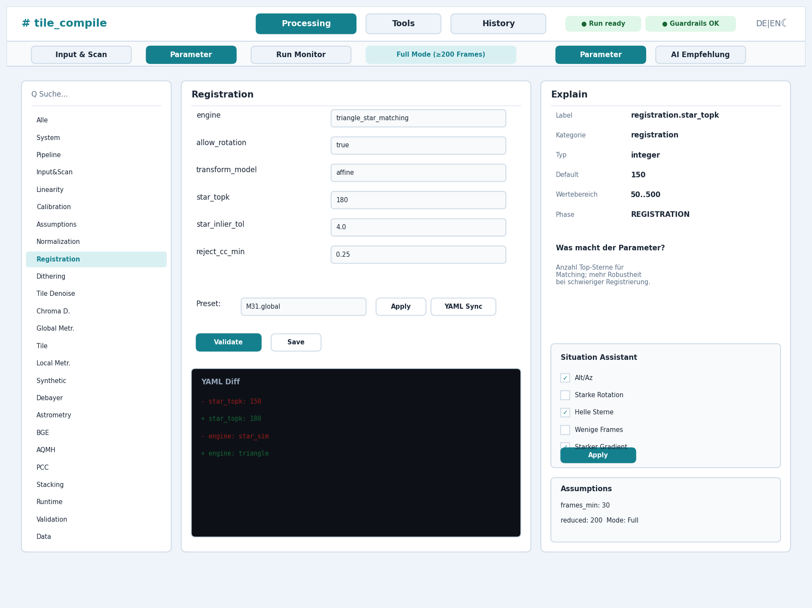
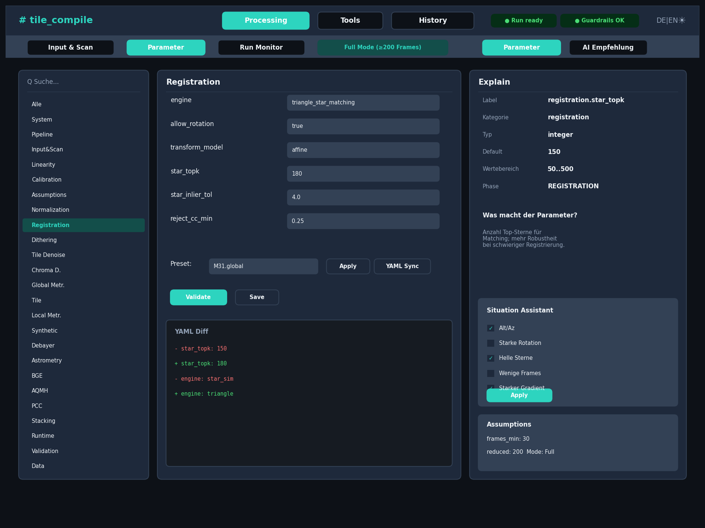
3.1 Layout – 3-Spalten¶
┌─────────────────────────────────────────────────────────────────────┐
│ Parameter │
│ Pipeline-Modus: [ Full Mode (≥200 Frames) ] [ Parameter | AI ] │
├─────────────────────────────────────────────────────────────────────┤
│ │
│ ┌─ Kategorien ──┐ ┌─ Editor ──────────────┐ ┌─ Explain ────────┐│
│ │ │ │ │ │ ││
│ │ 🔍 Suche... │ │ Registration │ │ Label ││
│ │ │ │ ┌───────────────────┐ │ │ registration. ││
│ │ • Alle │ │ │ engine │ │ │ star_topk ││
│ │ • System │ │ │ [triangle_star_ │ │ │ ││
│ │ • Pipeline │ │ │ matching▼] │ │ │ Kategorie ││
│ │ • Input&Scan │ │ │ │ │ │ registration ││
│ │ • Linearity │ │ │ allow_rotation │ │ │ ││
│ │ • Calibration │ │ │ [true▼] │ │ │ Typ: integer ││
│ │ • Assumptions │ │ │ │ │ │ Default: 150 ││
│ │ • Normaliz. │ │ │ transform_model │ │ │ Range: 50..500 ││
│ │ • Registration│ │ │ [affine▼] │ │ │ Phase: REGISTRATION│
│ │ • Dithering │ │ │ │ │ │ ││
│ │ • Tile Denoise│ │ │ star_topk │ │ │ Was macht der ││
│ │ • Chroma D. │ │ │ [180____] │ │ │ Parameter? ││
│ │ • Global Metr.│ │ │ │ │ │ Anzahl Top-Sterne ││
│ │ • Tile │ │ │ star_inlier_tol │ │ │ für Matching... ││
│ │ • Local Metr. │ │ │ [4.0____] │ │ │ ││
│ │ • Synthetic │ │ │ │ │ │ ┌─ Situation ────┐││
│ │ • Debayer │ │ │ reject_cc_min │ │ │ │ ☑ Alt/Az │││
│ │ • Astrometry │ │ │ [0.25___] │ │ │ │ ☐ Rotation │││
│ │ • BGE │ │ └───────────────────┘ │ │ │ ☑ Bright Stars │││
│ │ • AQMH │ │ │ │ │ ☐ Few Frames │││
│ │ • PCC │ │ Preset: [M31.global▼] │ │ │ ☑ Gradient │││
│ │ • Stacking │ │ [Apply] [YAML Sync] │ │ │ │││
│ │ • Runtime │ │ [Validate] [Save] │ │ │ [Apply] │││
│ │ • Validation │ │ │ │ └────────────────┘││
│ │ • Data │ │ ┌─ YAML Diff ────────┐ │ │ ││
│ │ │ │ │ - star_topk: 150 │ │ │ ┌─ Assumptions ─┐││
│ │ │ │ │ + star_topk: 180 │ │ │ │ (in Kategorie │││
│ │ │ │ │ - engine: star_sim │ │ │ │ Assumptions) │││
│ │ │ │ │ + engine: triangle │ │ │ │ frames_min: 30 │││
│ │ │ │ └────────────────────┘ │ │ │ reduced: 200 │││
│ │ │ │ │ │ │ Mode: Full │││
│ └───────────────┘ └───────────────────────┘ └──────────────────┘│
│ │
└─────────────────────────────────────────────────────────────────────┘
3.2 Assumptions als Kategorie¶
Wenn "Assumptions" in der Kategorie-Liste gewählt wird:
┌─ Editor ──────────────────────────────────────────┐
│ Assumptions │
│ │
│ frames_min [30___] │
│ frames_reduced_threshold [200__] │
│ reduced_mode_skip_clustering [true▼] │
│ reduced_mode_cluster_range [[5, 10]___] │
│ │
│ ┌─ Pipeline-Modus ─────────────────────────────┐ │
│ │ ✅ Full Mode (≥ 200 Frames) │ │
│ │ Alle Pipeline-Phasen aktiv inkl. Clustering │ │
│ └──────────────────────────────────────────────┘ │
│ │
└───────────────────────────────────────────────────┘
3.3 Explain-Panel Detail¶
┌─ Explain ──────────────────────────┐
│ │
│ Label │
│ registration.star_topk │
│ │
│ Pfad │
│ registration.star_topk │
│ │
│ Kategorie Typ │
│ registration integer │
│ │
│ Default Wertebereich │
│ 150 50..500 │
│ │
│ Phase │
│ REGISTRATION │
│ │
│ ────────────────────────────── │
│ │
│ Was macht der Parameter? │
│ Anzahl Top-Sterne für Matching; │
│ mehr Robustheit bei schwieriger │
│ Registrierung. │
│ │
│ ────────────────────────────── │
│ │
│ Situation Assistant │
│ ┌──────────────────────────────┐ │
│ │ ☑ Alt/Az │ │
│ │ ☐ Starke Rotation │ │
│ │ ☑ Helle Sterne │ │
│ │ ☐ Wenige Frames │ │
│ │ ☑ Starker Gradient │ │
│ └──────────────────────────────┘ │
│ [ Situation anwenden ] │
│ │
│ ────────────────────────────── │
│ │
│ YAML Diff (Preview) │
│ ┌──────────────────────────────┐ │
│ │ - star_topk: 150 │ │
│ │ + star_topk: 200 │ │
│ │ - engine: star_similarity │ │
│ │ + engine: triangle_star_match│ │
│ └──────────────────────────────┘ │
│ │
└────────────────────────────────────┘
3.4 Ablauf¶
User öffnet Parameter-Tab
│
├── Preset wählen (optional) → lädt Config
├── Kategorie wählen → Editor zeigt Felder
├── Parameter bearbeiten
│ ├── Explain-Panel zeigt Metadaten bei Fokus
│ ├── Situation Assistant wählbar
│ └── YAML-Diff aktualisiert sich live
│
├── "Validate" klick
│ ├── POST /api/config/validate
│ ├── Ergebnis: ✅ OK oder ⚠️ Warnings oder ❌ Errors
│ └── Guardrail-Badge aktualisiert
│
├── "Save" klick
│ ├── POST /api/config/save
│ ├── Neue Revision erstellt
│ └── Toast: "Config saved as revision N"
│
└── "Next" → wechselt zu Run Monitor
4. Tab 1: Processing – AI Empfehlung¶
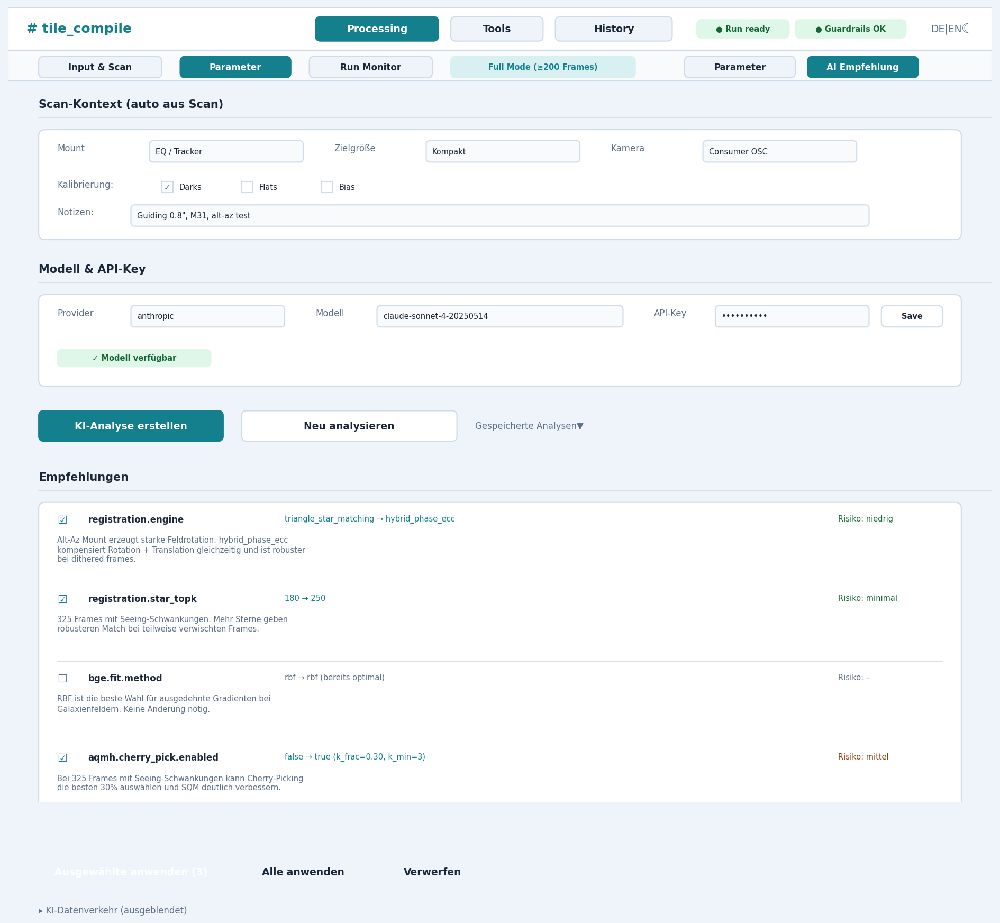
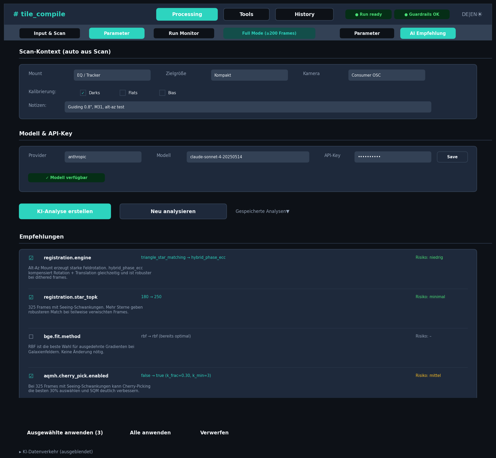
4.1 Layout¶
┌─────────────────────────────────────────────────────────────────────┐
│ Parameter │
│ Pipeline-Modus: [ Full Mode ] [ Parameter | ▸ AI Empfehlung ] │
├─────────────────────────────────────────────────────────────────────┤
│ │
│ ┌─ Scan-Kontext (auto aus Scan) ─────────────────────────────────┐ │
│ │ │ │
│ │ Mount [EQ / Tracker▼] │ │
│ │ Zielgröße [Kompakt▼] Kamera [Consumer OSC▼] │ │
│ │ Kalibrierung ☑ Darks ☐ Flats ☐ Bias │ │
│ │ Notizen [Guiding 0.8", M31, alt-az test_____________] │ │
│ │ │ │
│ └────────────────────────────────────────────────────────────────┘ │
│ │
│ ┌─ Modell & API-Key ─────────────────────────────────────────────┐ │
│ │ │ │
│ │ Provider [anthropic▼] Modell [claude-sonnet-4-20250514▼] │ │
│ │ API-Key [••••••••••••] [Key speichern] ✓ gespeichert │ │
│ │ Status: ✓ Modell verfügbar │ │
│ │ │ │
│ └────────────────────────────────────────────────────────────────┘ │
│ │
│ [ KI-Analyse erstellen ] [ Neu analysieren (Cache ignorieren) ] │
│ [ Gespeicherte Analysen▼ ] │
│ │
│ ┌─ Empfehlungen ─────────────────────────────────────────────────┐ │
│ │ │ │
│ │ ☑ registration.engine │ │
│ │ Aktuell: triangle_star_matching │ │
│ │ Empfohlen: hybrid_phase_ecc │ │
│ │ Begründung: Alt-Az Mount erzeugt starke Feldrotation. │ │
│ │ hybrid_phase_ecc kompensiert Rotation + Translation │ │
│ │ gleichzeitig und ist robuster bei dithered frames. │ │
│ │ Risiko: niedrig – Fallback auf triangle bei Misserfolg. │ │
│ │ │ │
│ │ ──────────────────────────────────────────────────────────── │ │
│ │ │ │
│ │ ☑ registration.star_topk │ │
│ │ Aktuell: 180 │ │
│ │ Empfohlen: 250 │ │
│ │ Begründung: 325 Frames mit Seeing-Schwankungen. Mehr │ │
│ │ Sterne geben robusteren Match bei teilweise verwischten │ │
│ │ Frames. Risiko: minimal, leicht längere Match-Zeit. │ │
│ │ │ │
│ │ ──────────────────────────────────────────────────────────── │ │
│ │ │ │
│ │ ☐ bge.method │ │
│ │ Aktuell: none │ │
│ │ Empfohlen: classic │ │
│ │ Begründung: Sichtbarer großskaliger Gradient. Classic │ │
│ │ nutzt den bestehenden robusten RBF-Fit. │ │
│ │ │ │
│ │ ──────────────────────────────────────────────────────────── │ │
│ │ │ │
│ │ ☑ aqmh.cherry_pick.enabled │ │
│ │ Aktuell: false │ │
│ │ Empfohlen: true (k_frac=0.30, k_min=3) │ │
│ │ Begründung: Bei 325 Frames mit Seeing-Schwankungen kann │ │
│ │ Cherry-Picking die besten 30% auswählen und SQM deutlich │ │
│ │ verbessern. Risiko: mittel – reduziert Stack-Tiefe. │ │
│ │ │ │
│ └────────────────────────────────────────────────────────────────┘ │
│ │
│ [ Ausgewählte anwenden (2) ] [ Alle anwenden ] [ Verwerfen ] │
│ │
│ ▸ KI-Datenverkehr (ausgeblendet) │
│ │
└─────────────────────────────────────────────────────────────────────┘
4.2 KI-Datenverkehr (aufgeklappt)¶
▼ KI-Datenverkehr
┌──────────────────────────────────────────────────────────────────┐
│ │
│ Request 1 21:30:15 │
│ POST /api/scan/analysis │
│ Model: claude-sonnet-4-20250514 │
│ Tokens: 1.247 input / 892 output │
│ Duration: 4.2s │
│ Status: ✓ OK │
│ [ Vollständige Antwort anzeigen... ] │
│ │
│ Request 2 21:28:02 │
│ GET /api/scan/analysis/latest │
│ Status: ✓ OK (cached) │
│ │
└──────────────────────────────────────────────────────────────────┘
4.3 Ablauf¶
User wechselt zu "AI Empfehlung" Sub-Tab
│
├── Scan-Kontext wird automatisch aus scanStore geladen
│ (falls Scan durchgeführt wurde)
│
├── Modell wählen + API-Key eingeben
│ ├── POST /api/ai/auth/{provider} (Key speichern)
│ └── GET /api/ai/models (verfügbare Modelle)
│
├── "KI-Analyse erstellen" klick
│ ├── Loading-State (Spinner, "Analysiere...")
│ ├── POST /api/scan/analysis (mit Kontext)
│ ├── Ergebnis wird gerendert
│ │ ├── Pro Empfehlung: Checkbox, Parameter, aktuell→empfohlen
│ │ ├── Begründungstext
│ │ └── Risiko-Bewertung
│ └── Toast: "KI-Analyse verfügbar" oder "Fehler"
│
├── Empfehlungen selektieren (Checkboxen)
│
├── "Ausgewählte anwenden" klick
│ ├── POST /api/config/patch (mit ausgewählten Änderungen)
│ ├── Config wird aktualisiert
│ ├── YAML-Diff im Parameter-Tab aktualisiert
│ ├── Validierung läuft automatisch
│ └── Toast: "2 Empfehlungen angewendet"
│
└── User wechselt zurück zu "Parameter" Tab
→ sieht angewendete Änderungen im YAML-Diff
→ kann weitere Anpassungen machen
5. Tab 1: Processing – Run Monitor¶
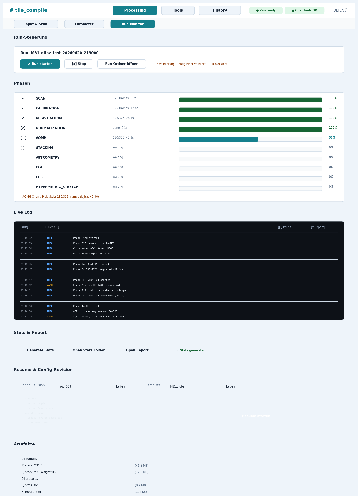
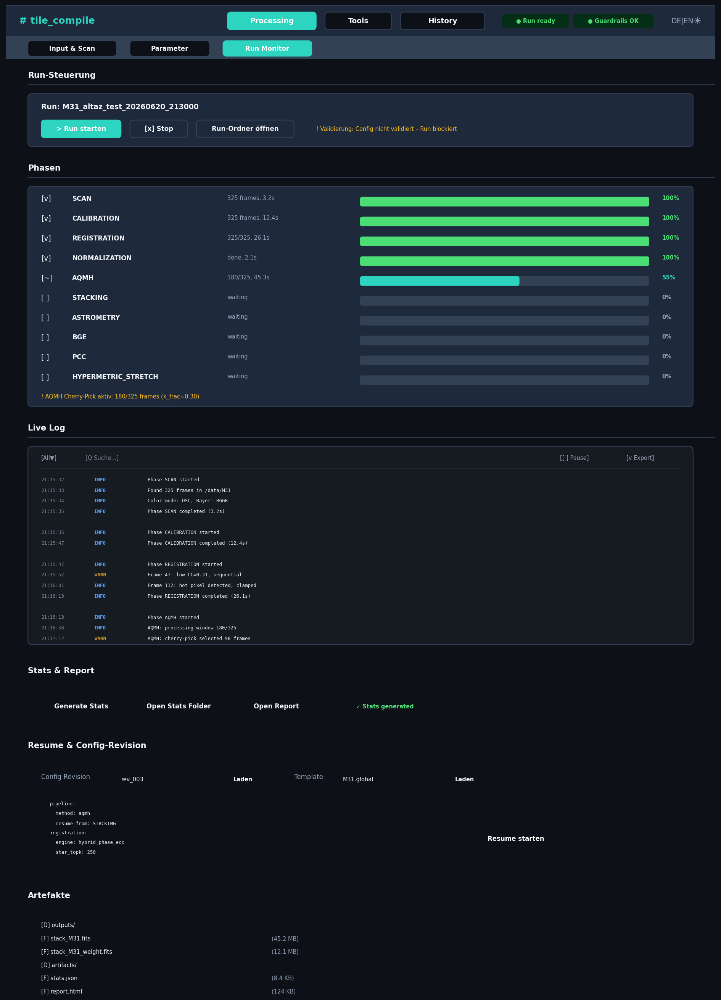
5.1 Layout¶
┌─────────────────────────────────────────────────────────────────────┐
│ Run Monitor │
├─────────────────────────────────────────────────────────────────────┤
│ │
│ ┌─ Run-Steuerung ────────────────────────────────────────────────┐ │
│ │ Run: M31_altaz_test_20260620_213000 │ │
│ │ [ ▶ Run starten ] [ ⏹ Stop ] [ Run-Ordner öffnen ] │ │
│ │ ⚠ Validierung: Config nicht validiert – Run blockiert │ │
│ └────────────────────────────────────────────────────────────────┘ │
│ │
│ ┌─ Phasen ──────────────────────────────────────────────────────┐ │
│ │ │ │
│ │ ✅ SCAN 325 frames 3.2s 100% │ │
│ │ ✅ CALIBRATION 325 frames 12.4s 100% │ │
│ │ ✅ REGISTRATION 325/325 26.1s 100% │ │
│ │ ✅ NORMALIZATION done 2.1s 100% │ │
│ │ 🔄 AQMH 180/325 45.3s 55% │ │
│ │ ┌──────────────────────────────────────┐ │ │
│ │ │█████████████████░░░░░░░░░░░░░░░░░░░░│ 55% │ │
│ │ └──────────────────────────────────────┘ │ │
│ │ ⏸ STACKING waiting 0% │ │
│ │ ⏸ ASTROMETRY waiting 0% │ │
│ │ ⏸ BGE waiting 0% │ │
│ │ ⏸ PCC waiting 0% │ │
│ │ ⏸ HYPERMETRIC_STRETCH waiting 0% │ │
│ │ │ │
│ │ ⚠ AQMH Cherry-Pick aktiv: 180/325 frames (k_frac=0.30) │ │
│ │ │ │
│ └───────────────────────────────────────────────────────────────┘ │
│ │
│ ┌─ Live Log ────────────────────────────────────────────────────┐ │
│ │ [All▼] [🔍 Suche...] [⏸ Pause] [⬇ Export] │ │
│ │ ┌─────────────────────────────────────────────────────────┐ │ │
│ │ │ │ │ │
│ │ │ 21:15:32 INFO Phase SCAN started │ │ │
│ │ │ 21:15:33 INFO Found 325 frames in /data/M31 │ │ │
│ │ │ 21:15:34 INFO Color mode: OSC, Bayer: RGGB │ │ │
│ │ │ 21:15:35 INFO Phase SCAN completed (3.2s) │ │ │
│ │ │ ─────────────────────────────────────────────────────── │ │ │
│ │ │ 21:15:35 INFO Phase CALIBRATION started │ │ │
│ │ │ 21:15:47 INFO Phase CALIBRATION completed (12.4s) │ │ │
│ │ │ ─────────────────────────────────────────────────────── │ │ │
│ │ │ 21:15:47 INFO Phase REGISTRATION started │ │ │
│ │ │ 21:15:52 WARN Frame 47: low CC=0.31, sequential │ │ │
│ │ │ 21:16:01 INFO Frame 112: hot pixel detected, clamped │ │ │
│ │ │ 21:16:13 INFO Phase REGISTRATION completed (26.1s) │ │ │
│ │ │ ─────────────────────────────────────────────────────── │ │ │
│ │ │ 21:16:13 INFO Phase AQMH started │ │ │
│ │ │ 21:16:58 INFO AQMH: processing window 180/325 │ │ │
│ │ │ 21:17:12 WARN AQMH: cherry-pick selected 98 frames │ │ │
│ │ │ │ │ │
│ │ └─────────────────────────────────────────────────────────┘ │ │
│ └───────────────────────────────────────────────────────────────┘ │
│ │
│ ┌─ Stats & Report ──────────────────────────────────────────────┐ │
│ │ [ Generate Stats ] [ Open Stats Folder ] [ Open Report ] │ │
│ │ Status: ✓ Stats generated │ │
│ └───────────────────────────────────────────────────────────────┘ │
│ │
│ ┌─ Resume & Config-Revision ────────────────────────────────────┐ │
│ │ │ │
│ │ Config Revision [rev_003▼] [ Revision laden ] │ │
│ │ Template [M31.global▼] [ Template laden ] │ │
│ │ Template Dir [/data/presets__________] [📂] [Reload] │ │
│ │ │ │
│ │ ┌─ Resume Config (YAML) ──────────────────────────────────┐ │ │
│ │ │ pipeline: │ │ │
│ │ │ method: aqmh │ │ │
│ │ │ resume_from: STACKING │ │ │
│ │ │ registration: │ │ │
│ │ │ engine: hybrid_phase_ecc │ │ │
│ │ │ star_topk: 250 │ │ │
│ │ │ ... │ │ │
│ │ └─────────────────────────────────────────────────────────┘ │ │
│ │ │ │
│ │ [ Resume starten ] │ │
│ │ │ │
│ └───────────────────────────────────────────────────────────────┘ │
│ │
│ ┌─ Artefakte ───────────────────────────────────────────────────┐ │
│ │ 📁 outputs/ │ │
│ │ 📄 stack_M31.fits (45.2 MB) [Anzeigen] │ │
│ │ 📄 stack_M31_weight.fits (12.1 MB) │ │
│ │ 📁 artifacts/ │ │
│ │ 📄 stats.json (8.4 KB) [Anzeigen] │ │
│ │ 📄 report.html (124 KB) [Öffnen] │ │
│ │ 📄 registration_log.txt (2.1 MB) [Anzeigen] │ │
│ │ 📁 registered/ │ │
│ │ 📄 reg_0001.fits (8.1 MB) │ │
│ │ ... │ │
│ └───────────────────────────────────────────────────────────────┘ │
│ │
└─────────────────────────────────────────────────────────────────────┘
5.2 Artefakt-Viewer (Modal)¶
┌──────────────────────────────────────────────────────────────┐
│ stats.json [ Schließen ]│
├──────────────────────────────────────────────────────────────┤
│ │
│ { │
│ "run_id": "M31_altaz_test_20260620_213000", │
│ "phases": { │
│ "scan": { "duration_s": 3.2, "frames": 325 }, │
│ "registration": { │
│ "duration_s": 26.1, │
│ "direct_global": 97, │
│ "sequential_refined": 227, │
│ "reference_frame": 256 │
│ }, │
│ ... │
│ } │
│ } │
│ │
└──────────────────────────────────────────────────────────────┘
5.3 Ablauf¶
User öffnet Run Monitor Tab
│
├── Auto-Load: aktueller Run aus uiState
│ ├── GET /api/runs/{runId}/status
│ ├── WebSocket: /api/ws/runs/{runId}
│ └── Phasen + Log werden live aktualisiert
│
├── "Run starten" klick
│ ├── Validierung prüfen (Guardrail)
│ ├── POST /api/runs/start
│ ├── WebSocket verbinden
│ └── Phasen + Log aktualisieren
│
├── "Stop" klick
│ ├── POST /api/runs/{runId}/stop
│ └── Phasen-Status aktualisiert
│
├── Phasen-Klick (nach Run-Ende)
│ └── Setzt Resume-Phase im Resume-Panel
│
├── "Generate Stats" klick
│ ├── POST /api/runs/{runId}/stats
│ ├── Polling bis fertig
│ └── "Open Report" wird enabled
│
├── "Resume starten" klick
│ ├── POST /api/runs/{runId}/resume
│ ├── WebSocket verbinden
│ └── Phasen + Log aktualisieren
│
└── Artefakt-Klick
└── Modal mit Inhalt (JSON, Text, oder Link)
6. Tab 2: Tools – Raw Stack¶
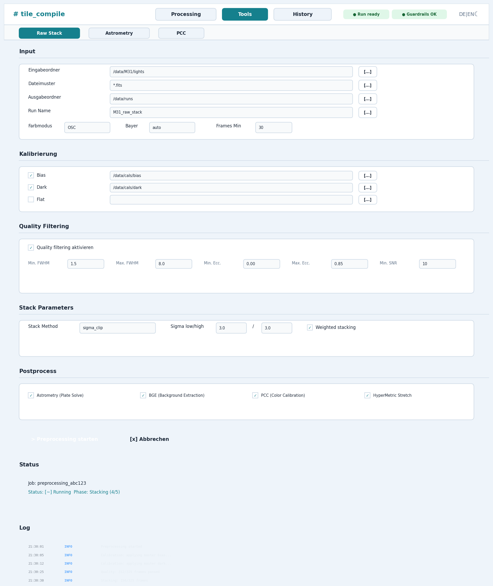
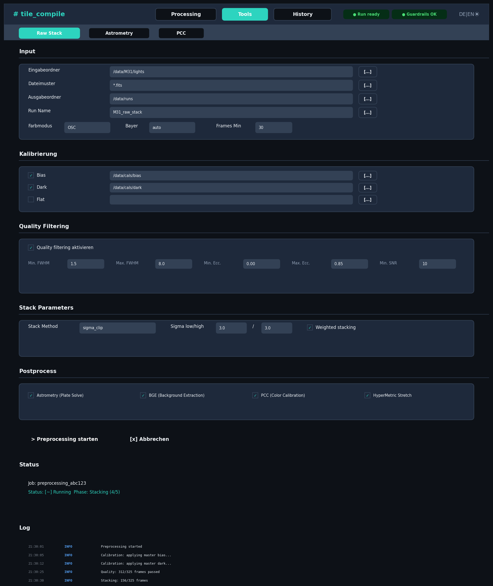
6.1 Layout¶
┌─────────────────────────────────────────────────────────────────────┐
│ Raw Stack │
├─────────────────────────────────────────────────────────────────────┤
│ │
│ ┌─ Input ────────────────────────────────────────────────────────┐│
│ │ ││
│ │ Eingabeordner [/data/M31/lights____________________] [📂] ││
│ │ Dateimuster [*.fits__________] ││
│ │ Ausgabeordner [/data/runs_______________________] [📂] ││
│ │ Run Name [M31_raw_stack____________________] ││
│ │ Frames Minimum [30___] Max. Frames [0___] ││
│ │ Farbmodus [OSC▼] Bayer-Pattern [auto▼] ││
│ │ ││
│ └────────────────────────────────────────────────────────────────┘│
│ │
│ ┌─ Kalibrierung ─────────────────────────────────────────────────┐│
│ │ ☑ Bias [/data/cals/bias____] [📂] ││
│ │ ☑ Dark [/data/cals/dark____] [📂] ││
│ │ ☐ Flat [_____________________] [📂] ││
│ └────────────────────────────────────────────────────────────────┘│
│ │
│ ┌─ Quality Filtering ────────────────────────────────────────────┐│
│ │ ☑ Quality filtering aktivieren ││
│ │ Min. FWHM [1.5___] Max. FWHM [8.0___] ││
│ │ Min. Eccentricity [0.00__] Max. Eccentricity [0.85__] ││
│ │ Min. SNR [10___] ││
│ └────────────────────────────────────────────────────────────────┘│
│ │
│ ┌─ Stack Parameters ─────────────────────────────────────────────┐│
│ │ Stack Method [sigma_clip▼] ││
│ │ Sigma (low/high) [3.0] / [3.0] ││
│ │ ☑ Weighted stacking ││
│ └────────────────────────────────────────────────────────────────┘│
│ │
│ ┌─ Postprocess ──────────────────────────────────────────────────┐│
│ │ ☑ Astrometry (Plate Solve) ││
│ │ ☑ BGE (Background Extraction) ││
│ │ ☑ PCC (Color Calibration) ││
│ │ ☑ HyperMetric Stretch ││
│ └────────────────────────────────────────────────────────────────┘│
│ │
│ [ ▶ Preprocessing starten ] [ ⏹ Abbrechen ] ││
│ │
│ ┌─ Status ───────────────────────────────────────────────────────┐│
│ │ Job: preprocessing_abc123 ││
│ │ Status: 🔄 Running ││
│ │ Phase: Stacking (4/5) ││
│ │ ████████████████████░░░░░ 80% ││
│ └────────────────────────────────────────────────────────────────┘│
│ │
│ ┌─ Log ──────────────────────────────────────────────────────────┐│
│ │ [All▼] [🔍 Suche...] ││
│ │ 21:30:01 INFO Preprocessing started ││
│ │ 21:30:05 INFO Calibration: applying master bias... ││
│ │ 21:30:12 INFO Calibration: applying master dark... ││
│ │ 21:30:25 INFO Quality: 312/325 frames passed ││
│ │ 21:30:30 INFO Stacking: 156/325 frames ││
│ └────────────────────────────────────────────────────────────────┘│
│ │
└─────────────────────────────────────────────────────────────────────┘
6.2 Ablauf¶
User öffnet Tools Tab → Raw Stack Sub-Tab
│
├── Input + Kalibrierung konfigurieren (wie Input & Scan)
├── Quality + Stack Parameter setzen
├── Postprocess-Optionen wählen
│
├── "Preprocessing starten" klick
│ ├── POST /api/tools/preprocessing/run
│ ├── Job-ID speichern
│ ├── Polling: GET /api/tools/preprocessing/status?job_id=...
│ ├── Progress + Log aktualisieren
│ └── Toast bei Abschluss
│
├── "Abbrechen" klick
│ └── POST /api/tools/preprocessing/cancel
│
└── Nach Abschluss:
├── GET /api/tools/preprocessing/report?job_id=...
└── Report anzeigen oder herunterladen
7. Tab 2: Tools – Astrometry¶
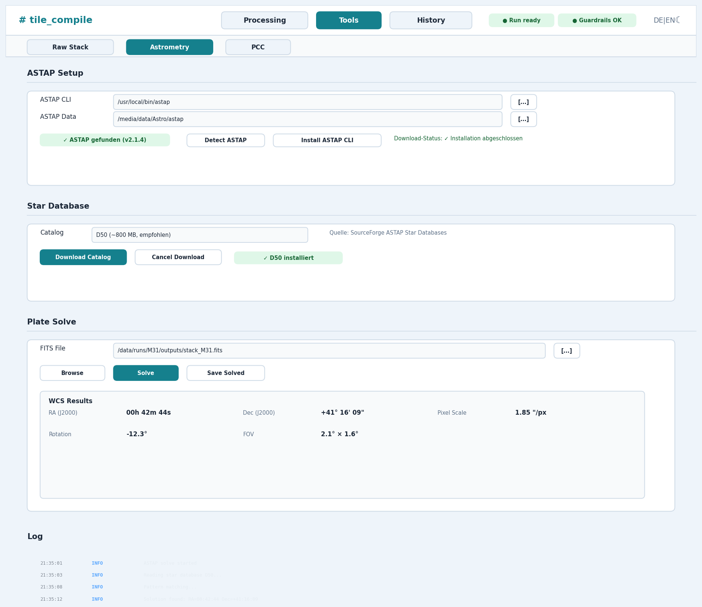
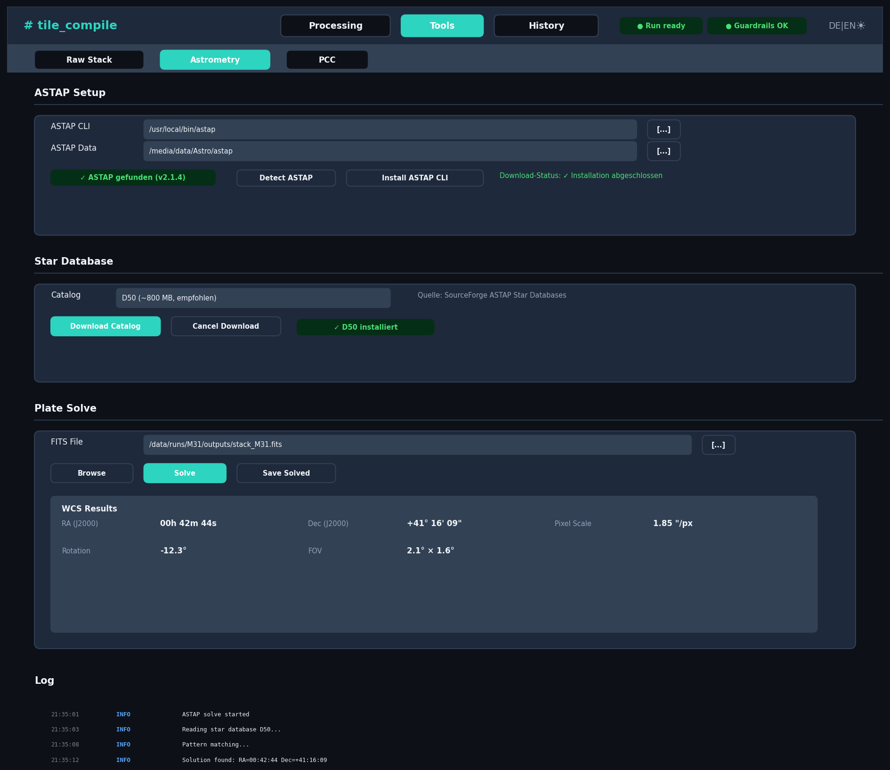
7.1 Layout¶
┌─────────────────────────────────────────────────────────────────────┐
│ Astrometry │
├─────────────────────────────────────────────────────────────────────┤
│ │
│ ┌─ ASTAP Setup ──────────────────────────────────────────────────┐│
│ │ ││
│ │ ASTAP CLI [/usr/local/bin/astap___________] [📂] ││
│ │ ASTAP Data [/media/data/Astro/astap________] [📂] ││
│ │ Status ✓ ASTAP gefunden (v2.1.4) ││
│ │ ││
│ │ [ Detect ASTAP ] [ Install/Reinstall ASTAP CLI ] ││
│ │ Download-Status: ✓ Installation abgeschlossen ││
│ │ ││
│ └────────────────────────────────────────────────────────────────┘│
│ │
│ ┌─ Star Database ────────────────────────────────────────────────┐│
│ │ ││
│ │ Catalog [D50 (~800 MB, empfohlen)▼] ││
│ │ Quelle: SourceForge ASTAP Star Databases ││
│ │ ││
│ │ [ Download Catalog ] [ Cancel Download ] ││
│ │ Status: ✓ D50 installiert ││
│ │ ││
│ └────────────────────────────────────────────────────────────────┘│
│ │
│ ┌─ Plate Solve ──────────────────────────────────────────────────┐│
│ │ ││
│ │ FITS File [/data/runs/M31/outputs/stack_M31.fits] [📂] ││
│ │ ││
│ │ [ Browse ] [ Solve ] [ Save Solved ] ││
│ │ ││
│ │ ┌─ WCS Results ──────────────────────────────────────────┐ ││
│ │ │ │ ││
│ │ │ RA (J2000) Dec (J2000) Pixel Scale │ ││
│ │ │ 00h 42m 44s +41° 16' 09" 1.85 "/px │ ││
│ │ │ │ ││
│ │ │ Rotation FOV │ ││
│ │ │ -12.3° 2.1° × 1.6° │ ││
│ │ │ │ ││
│ │ └────────────────────────────────────────────────────────┘ ││
│ │ ││
│ └────────────────────────────────────────────────────────────────┘│
│ │
│ ┌─ Log ──────────────────────────────────────────────────────────┐│
│ │ 21:35:01 INFO ASTAP solve started ││
│ │ 21:35:03 INFO Reading star database D50... ││
│ │ 21:35:08 INFO Pattern matching... ││
│ │ 21:35:12 INFO Solution found: RA=00:42:44 Dec=+41:16:09 ││
│ └────────────────────────────────────────────────────────────────┘│
│ │
└─────────────────────────────────────────────────────────────────────┘
7.2 Ablauf¶
User öffnet Tools Tab → Astrometry Sub-Tab
│
├── ASTAP Setup
│ ├── Pfad eingeben / browsen
│ ├── "Detect ASTAP" → GET /api/tools/astrometry/detect
│ └── "Install" → POST /api/tools/astrometry/install-cli (Job polling)
│
├── Star Database
│ ├── Catalog wählen
│ ├── "Download" → POST /api/tools/astrometry/catalog/download
│ ├── Polling bis fertig
│ └── "Cancel" → POST /api/tools/astrometry/catalog/cancel
│
└── Plate Solve
├── FITS-Datei wählen
├── "Solve" → POST /api/tools/astrometry/solve
├── WCS-Results anzeigen
└── "Save Solved" → POST /api/tools/astrometry/save-solved
8. Tab 2: Tools – PCC¶
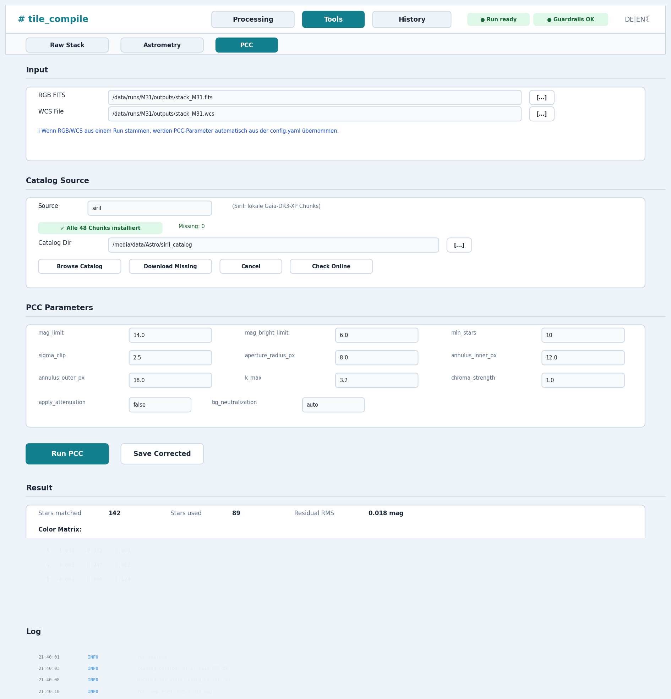
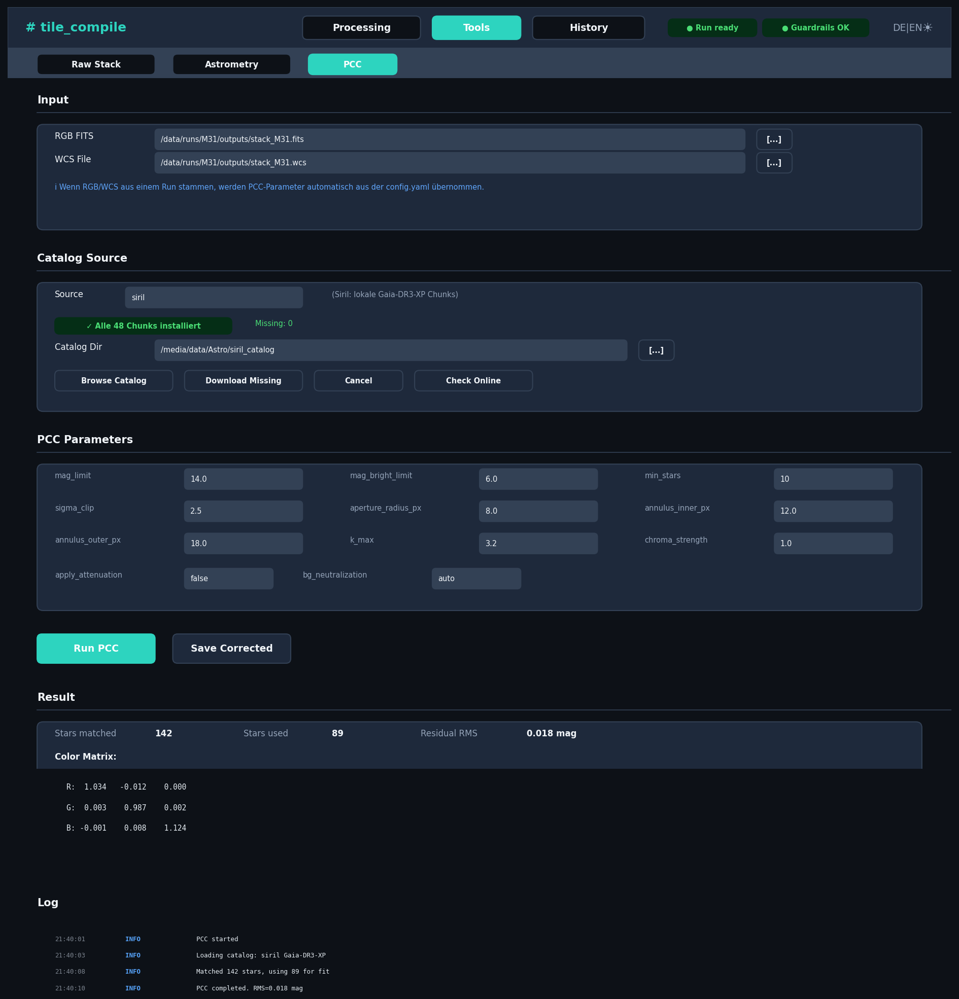
8.1 Layout¶
┌─────────────────────────────────────────────────────────────────────┐
│ PCC │
├─────────────────────────────────────────────────────────────────────┤
│ │
│ ┌─ Input ────────────────────────────────────────────────────────┐│
│ │ ││
│ │ RGB FITS [/data/runs/M31/outputs/stack_M31.fits] [📂] ││
│ │ WCS File [/data/runs/M31/outputs/stack_M31.wcs] [📂] ││
│ │ ││
│ │ ℹ Wenn RGB/WCS aus einem Run stammen, werden PCC-Parameter ││
│ │ automatisch aus der config.yaml übernommen. ││
│ │ ││
│ └────────────────────────────────────────────────────────────────┘│
│ │
│ ┌─ Catalog Source ───────────────────────────────────────────────┐│
│ │ ││
│ │ Source [siril▼] (Siril: lokale Gaia-DR3-XP Chunks) ││
│ │ [vizier_gaia▼] (Online: direkte VizieR-Abfrage) ││
│ │ [vizier_apass▼] ││
│ │ ││
│ │ Siril Status ✓ Alle 48 Chunks installiert ││
│ │ Missing Chunks 0 ││
│ │ Catalog Dir [/media/data/Astro/siril_catalog] [📂] ││
│ │ ││
│ │ [ Browse Catalog Dir ] [ Download Missing ] [ Cancel ] ││
│ │ [ Check Online Source ] ││
│ │ ││
│ └────────────────────────────────────────────────────────────────┘│
│ │
│ ┌─ PCC Parameters ───────────────────────────────────────────────┐│
│ │ ││
│ │ mag_limit [14.0_] mag_bright_limit [6.0_] ││
│ │ min_stars [10___] sigma_clip [2.5_] ││
│ │ aperture_radius_px [8.0__] annulus_inner_px [12.0] ││
│ │ annulus_outer_px [18.0_] k_max [3.2_] ││
│ │ chroma_strength [1.0__] ││
│ │ apply_attenuation [false▼] ││
│ │ bg_neutralization [auto▼] ││
│ │ ││
│ └────────────────────────────────────────────────────────────────┘│
│ │
│ [ Run PCC ] [ Save Corrected ] │
│ │
│ ┌─ Result ───────────────────────────────────────────────────────┐│
│ │ ││
│ │ Stars matched 142 Stars used 89 ││
│ │ Residual RMS 0.018 mag ││
│ │ ││
│ │ Color Matrix: ││
│ │ ┌────────────────────────────────────────────────────────┐ ││
│ │ │ R: 1.034 -0.012 0.000 │ ││
│ │ │ G: 0.003 0.987 0.002 │ ││
│ │ │ B: -0.001 0.008 1.124 │ ││
│ │ └────────────────────────────────────────────────────────┘ ││
│ │ ││
│ └────────────────────────────────────────────────────────────────┘│
│ │
│ ┌─ Log ──────────────────────────────────────────────────────────┐│
│ │ 21:40:01 INFO PCC started ││
│ │ 21:40:03 INFO Loading catalog: siril Gaia-DR3-XP ││
│ │ 21:40:08 INFO Matched 142 stars, using 89 for fit ││
│ │ 21:40:10 INFO PCC completed. RMS=0.018 mag ││
│ └────────────────────────────────────────────────────────────────┘│
│ │
└─────────────────────────────────────────────────────────────────────┘
8.2 Ablauf¶
User öffnet Tools Tab → PCC Sub-Tab
│
├── Input: RGB + WCS Datei wählen
│ ├── Wenn aus Run → Parameter auto-laden aus config.yaml
│ └── Hint anzeigen
│
├── Catalog Source wählen
│ ├── Siril: Status checken, fehlende Chunks downloaden
│ └── Online: Check Online Source
│
├── PCC Parameter einstellen (oder Defaults übernehmen)
│
├── "Run PCC" klick
│ ├── POST /api/tools/pcc/run
│ ├── Loading-State
│ ├── Result anzeigen (Stars, RMS, Matrix)
│ └── Log aktualisieren
│
└── "Save Corrected" klick
└── POST /api/tools/pcc/save-corrected
9. Tab 3: History – Run History¶
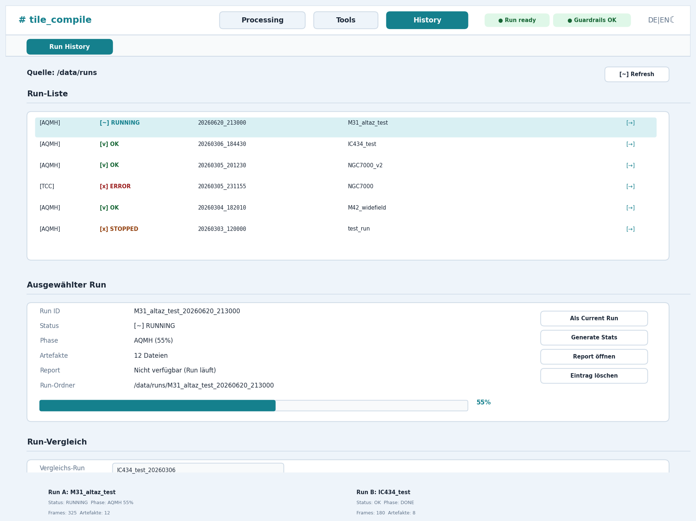
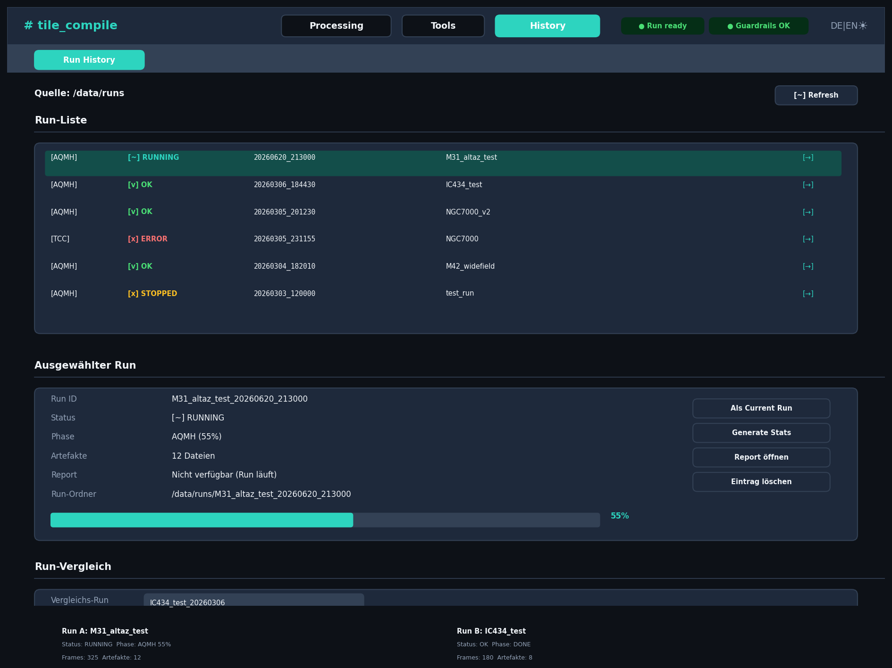
9.1 Layout¶
┌─────────────────────────────────────────────────────────────────────┐
│ Run History │
├─────────────────────────────────────────────────────────────────────┤
│ │
│ Quelle: /data/runs [ 🔄 Refresh ] │
│ │
│ ┌─ Run-Liste ────────────────────────────────────────────────────┐│
│ │ ││
│ │ [AQMH] 🔄 RUNNING 20260620_213000 M31_altaz_test [→] ││
│ │ [AQMH] ✅ OK 20260306_184430 IC434_test [→] ││
│ │ [AQMH] ✅ OK 20260305_201230 NGC7000_v2 [→] ││
│ │ [TCC] ❌ ERROR 20260305_231155 NGC7000 [→] ││
│ │ [AQMH] ✅ OK 20260304_182010 M42_widefield [→] ││
│ │ [AQMH] ⏹ STOPPED 20260303_120000 test_run [→] ││
│ │ ││
│ └────────────────────────────────────────────────────────────────┘│
│ │
│ ┌─ Ausgewählter Run ─────────────────────────────────────────────┐│
│ │ ││
│ │ Run ID M31_altaz_test_20260620_213000 ││
│ │ Status 🔄 RUNNING ││
│ │ Phase AQMH (55%) ││
│ │ Fortschritt ████████████░░░░░░░░░░ 55% ││
│ │ Artefakte 12 Dateien ││
│ │ Report Nicht verfügbar (Run läuft) ││
│ │ Run-Ordner /data/runs/M31_altaz_test_20260620_213000 ││
│ │ ││
│ │ [ Als Current Run ] [ Generate Stats ] [ Report öffnen ] ││
│ │ [ Eintrag löschen ] ││
│ │ ││
│ └────────────────────────────────────────────────────────────────┘│
│ │
│ ┌─ Run-Vergleich ────────────────────────────────────────────────┐│
│ │ ││
│ │ Vergleichs-Run [IC434_test_20260306▼] ││
│ │ ││
│ │ ┌─ Run A ──────────┐ ┌─ Run B ──────────┐ ││
│ │ │ M31_altaz_test │ │ IC434_test │ ││
│ │ │ Status: RUNNING │ │ Status: OK │ ││
│ │ │ Phase: AQMH 55% │ │ Phase: DONE │ ││
│ │ │ Frames: 325 │ │ Frames: 180 │ ││
│ │ │ Artefakte: 12 │ │ Artefakte: 8 │ ││
│ │ └──────────────────┘ └──────────────────┘ ││
│ │ ││
│ │ [ Current als Vergleich ] [ Vergleich löschen ] ││
│ │ ││
│ └────────────────────────────────────────────────────────────────┘│
│ │
└─────────────────────────────────────────────────────────────────────┘
9.2 Ablauf¶
User öffnet History Tab → Run History Sub-Tab
│
├── GET /api/runs (Liste laden)
│
├── Run auswählen
│ ├── GET /api/runs/{runId}/status
│ ├── GET /api/runs/{runId}/artifacts
│ └── Details anzeigen
│
├── "Als Current Run" → setzt aktuellen Run für Run Monitor
│ ├── POST /api/runs/{runId}/set-current
│ └── Toast: "Run als current gesetzt"
│
├── "Generate Stats" → gleiche Logik wie Run Monitor
├── "Report öffnen" → öffnet HTML-Report in neuem Tab
├── "Eintrag löschen" → DELETE /api/runs/{runId}/delete (mit Bestätigung)
│
└── Vergleichs-Run wählen → Side-by-Side Anzeige
10. Logging-Konzept¶
10.1 Log-Viewer Komponente¶
┌─ Live Log ──────────────────────────────────────────────────────┐
│ │
│ ┌─ Toolbar ─────────────────────────────────────────────────┐ │
│ │ [All▼] [Info✓] [Warning✓] [Error✓] [Debug☐] [Trace☐] │ │
│ │ [🔍 Suche im Log...] │ │
│ │ [⏸ Pause] [⬇ Export] [🗑 Clear] │ │
│ └───────────────────────────────────────────────────────────┘ │
│ │
│ ┌─ Log-Liste (virtualisiert) ───────────────────────────────┐ │
│ │ │ │
│ │ 21:15:32 INFO Phase SCAN started │ │
│ │ 21:15:33 INFO Found 325 frames in /data/M31 │ │
│ │ 21:15:34 INFO Color mode: OSC, Bayer: RGGB │ │
│ │ ─────────────────────────────────────────────────────── │ │
│ │ 21:15:35 INFO Phase SCAN completed (3.2s) │ │
│ │ 21:15:35 INFO Phase CALIBRATION started │ │
│ │ 21:15:47 INFO Phase CALIBRATION completed (12.4s) │ │
│ │ ─────────────────────────────────────────────────────── │ │
│ │ 21:15:47 INFO Phase REGISTRATION started │ │
│ │ 21:15:52 WARN ⚠ Frame 47: low CC=0.31, sequential │ │
│ │ 21:16:01 INFO Frame 112: hot pixel detected, clamped │ │
│ │ 21:16:13 INFO Phase REGISTRATION completed (26.1s) │ │
│ │ ─────────────────────────────────────────────────────── │ │
│ │ 21:16:13 INFO Phase AQMH started │ │
│ │ 21:16:58 INFO AQMH: processing window 180/325 │ │
│ │ 21:17:12 WARN ⚠ AQMH: cherry-pick selected 98 frames │ │
│ │ │ │
│ └────────────────────────────────────────────────────────────┘ │
│ Auto-scroll: AN (neue Zeilen unten) │
└────────────────────────────────────────────────────────────────┘
10.2 Log-Format¶
Jede Log-Zeile besteht aus:
| Level | Farbe | Icon |
|---|---|---|
| ERROR | text-red-500 |
❌ |
| WARN | text-amber-500 |
⚠ |
| INFO | text-blue-400 |
– |
| DEBUG | text-gray-500 |
– |
| TRACE | text-gray-700 |
– |
10.3 Phase-Marker¶
Phasen-Übergänge werden als visuelle Trennlinie dargestellt:
───────────────────────────────────────────────────────────────
21:15:35 INFO Phase SCAN completed (3.2s)
───────────────────────────────────────────────────────────────
21:15:35 INFO Phase CALIBRATION started
10.4 Performance¶
- Virtualisierung: Canvas-basiertes Rendering oder
IntersectionObserver-basierte Zeilen-Wiederverwendung – nur sichtbare Zeilen werden gerendert - Max. Zeilen: 10.000 im Memory, ältere werden abgeschnitten
- Auto-scroll: Nur wenn Pause nicht aktiv und User am unteren Ende
- Search: Inkrementelle Suche über im Memory befindliche Zeilen
- Export: Alle Zeilen (nicht nur gefilterte) als
.txtherunterladen
11. Toast-Notifications¶
11.1 Position und Verhalten¶
[ Tab-Inhalt ]
┌────────────┐
│ ✅ Success │
│ │
│ [×] │
└────────────┘
┌────────────┐
│ ⚠ Warning │
│ │
│ [×] │
└────────────┘
- Position: unten rechts
- Stack: neueste oben
- Auto-dismiss: 5s (Success/Info), 10s (Warning), sticky (Error)
- Animation: Slide-in von rechts
- Klick: → Navigation zum relevanten Tab
11.2 Toast-Typen¶
┌──────────────────────────────────────┐
│ ✅ Scan completed │
│ 325 frames, OSC, RGGB │
│ [×] │
└──────────────────────────────────────┘
┌──────────────────────────────────────┐
│ ⚠ Validation: 2 warnings │
│ Click to review │
│ [×] │
└──────────────────────────────────────┘
┌──────────────────────────────────────┐
│ ❌ Run failed │
│ Phase: REGISTRATION │
│ Error: timeout after 60s │
│ [×] │
└──────────────────────────────────────┘
┌──────────────────────────────────────┐
│ ℹ KI-Analyse verfügbar │
│ 4 Empfehlungen generiert │
│ Click to review │
│ [×] │
└──────────────────────────────────────┘
11.3 Toast-Events¶
| Event | Typ | Trigger |
|---|---|---|
| Scan completed | Success | /api/scan response |
| Scan failed | Error | /api/scan error |
| Validation OK | Success | /api/config/validate ok |
| Validation warnings | Warning | /api/config/validate warnings |
| Validation errors | Error | /api/config/validate errors |
| Config saved | Success | /api/config/save ok |
| Run started | Info | /api/runs/start ok |
| Run completed | Success | WebSocket: phase=DONE |
| Run failed | Error | WebSocket: phase=ERROR |
| KI analysis ready | Info | /api/scan/analysis ok |
| Download completed | Success | Job polling: state=ok |
| Download failed | Error | Job polling: state=error |
12. Responsive Verhalten¶
12.1 Desktop (>1280px)¶
- 3-Spalten Layout im Parameter-Tab (Kategorien | Editor | Explain)
- Run Monitor: Phasen + Log + Resume nebeneinander
- Full Feature-Set
12.2 Tablet (768-1280px)¶
- Parameter-Tab: 2-Spalten (Kategorien | Editor), Explain als Drawer/Popover
- Run Monitor: Phasen oben, Log unten, Resume als Tab
- History: Liste + Details gestapelt
12.3 Mobile (<768px) – optional, nicht primäres Ziel¶
- Single-Spalten Layout
- Sub-Tabs als Dropdown
- Log: Full-width
- Parameter: Kategorie-Liste als Drawer
12.4 Breakpoints (CSS Media Queries)¶
sm: 640px /* Mobile landscape */
md: 768px /* Tablet portrait */
lg: 1024px /* Tablet landscape / small desktop */
xl: 1280px /* Desktop */
2xl: 1536px /* Large desktop (Default-Target) */
Primäres Target: xl (1280px+) und 2xl (1536px+)
Sekundäres Target: lg (1024px+) mit Layout-Anpassung
Nicht-Target: <lg (nicht funktionskritisch)
13. Dark Mode¶
13.1 Umschaltung¶
- Theme-Toggle (☾/☀ Icon) → Theme: Light / Dark
- Persistiert in
uiStore - CSS Custom Properties via
html[data-theme="dark"]Attribut
13.2 Dark Mode Farben¶
Background: #0f172a (slate-900)
Surface: #1e293b (slate-800)
Border: #334155 (slate-700)
Foreground: #f1f5f9 (slate-100)
Muted: #94a3b8 (slate-400)
Primary: #2dd4bf (teal-400)
Primary-soft: #134e4a (teal-900)
Success: #4ade75 (green-400)
Warning: #fbbf24 (amber-400)
Error: #f87171 (red-400)